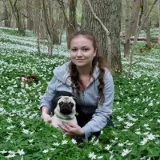

<!docktype html>
<html lang="sv"></html>

   <head>
           <meta charset="utf-8" />
           <title>Om mig</title>
          
  </head>
  <body>
          <ul>
                <li><a href="index.html">Startsida</a></li>
                <li><a href="presentation.html">Presentation</a></li>
                <li><a href="laborationer.html">Laborationsportal</a></li>
                <li><a href="kontakt.html">Kontakt</a></li>
                
            </ul>
          
        <h1>Om mig</h1>
          
          <p>Jag är en tjej på 22 vårar som är född och uppvuxen i stockholmstrakten. Sedan 3 år tillbaka är jag bosatt i
              Kalmar med min sambo Rickard och min mops Daisy, där jag studerar till webbprogrammerare. På min fritid älskar jag att spela
              tv- och dataspel, laga mat, gå på konvent och rida.
          </p>
        <h3>Erfarenheter</h3>  
          <p>Innan jag började studera till webbprogrammerare läste jag en kurs i speldesign vid Luleå tekniska universitet,
             samtidigt som jag jobbade som HR-administratör på Eniro. Det var kursen i speldesign som fick mig att bli intresserad av kod
            och hur kod fungerar. Jag tog därför chansen att söka in till Linnéuniversitetet för att se om jag kunde lära mig detta.
            Det var sorgligt och läskigt att lämna mitt jobb på Eniro för att börja studera något som jag aldrig tidigare har hållit på med, men 
            spännande att komma igång och lära sig nya saker.
            Mina tidigare arbetslivserfarenheter ligger inte långt från det jag fick jobba med på Eniro. Jag har jobbat på HR-avdelningen på Preem AB,
            internservice på Roslagens Sparbank och som cafébiträde på Café Landkrabban i Norrtälje.
            </p>
        <h3>Familjen</h3>
          <p>Min familj består av mina 2 yngre bröder Gustaf (21 år) och Oscar (19 år). Gustaf är min älsta lillebror och han får ibland även för sig att han är min 
          storebror. Han gillar, precis som jag att spela TV- och data spel men tycker även om ekonomi. Oscar är min yngsta lillabror och har alltid stått för humorn i familjen.
          Även han har ett intresse för TV- och dataspel och ekonomi. Min mamma Martina och min pappa Johan båda i sina bästa år och stora förebilder för mig. Mamma är personal
            chef och pappa jobbar i bank. Även om jag aldrig varit särskilt intresserad av deras yrken så har deras driv och framfart i karriären alltid varit något som drivit
            mig till att alltid göra mitt bästa.<br>
            Min sambo Rickard är min stora kärlek och även den som leder mig på rätt väg. Vi träffades för 4 år sedan i Linköping. Han studerar just nu produktdesign vid
            Linnéuniversitetet. Jag har även en hund som heter Daisy. Daisy är en mops på 2 år med glatt humör, som älskar att ligga i soffan och tugga på ben.
          </p>
        <h3>Tankar om framtiden</h3>
          <p>Hur tänker jag om framtiden? Jag hoppas att jag klarar mig igenom skolan helskinnad och att jag kan börja jobba direkt. Mitt drömmjobb är att få börja jobba med
              spelutveckling. Kanske bestämmer jag mig för att läsa vidare inom något annat ämne för att komma närmare mitt drömjobb eller kanske jag bestämmer mig för att
              köra ännu djupare in i programmerarlinjen? Jag vet inte hur det kommer gå men jag ska göra mitt bästa och jag hoppas att det tar mig i någolunda rätt riktning.
          </p>
          
          
          
          <h3>Styrkor</h3>
      
          <ul>
              <li>Snäll</li>
              <li>Tålig</li>
              <li>Givmild</li>
          </ul>
          <h3>Svagheter</h3>
          <ul>
              <li>Lat</li>
              <li>Envis</li>
              <li>Naiv</li>
          </ul>
          
          <h3>Mina 10 top bästa spel</h3>
             <ol>
                 <li>The legend of Zelda: Ocarina of time</li>
                 <li>Super Mario Bros.</li>
                 <li>Guild Wars 2</li>
                 <li>Fallout 3</li>
                 <li>Alice: Madness returns</li>
                 <li>Rayman Legends</li>
                 <li>Halo 2</li>
                 <li>Sonic generations</li>
                 <li>Banjoo-Kazooie</li>
                 <li>League of Legends</li>
             </ol> 
          
          <h3>Några böcker jag gillar</h3>
              <dl>
                  <dt>Fantasy</dt>
                    <dd>Lian Hearn, Över näktergalens golv </dd>
                    <dd>Paul Hoffman, Left hand of God</dd>
                  <dt>Spelutveckling</dt>
                    <dd>Jane McGonigal, Reality is Broken</dd>
                    <dd>Tynan Sylvester, Designing Games</dd>
                    <dd>Tracy Fullerton, Game Design Workshop</dd>
                    <dd>Alan Thorn, Game Development Principles</dd>
                    
                  
              </dl>
      
            <h3>Normal Boots</h3>
              
              <p>Normal Boots är en sidamed diverse videoklipp om Tv- och dataspel.
                Den drivs av ett gäng kända youtube personer som alla älskar allt som har med
                spel att göra, både morderna och retrospel. Bland annat JonTron och Peanut Butter Gamer.
                Klicka in på deras sida vett jag!
                </p>
                <a href="http://normalboots.com/">Normal Boots</a>
                
            <h3>Eniro</h3>
            
              <p>Eniro är ett sökföretag som du kan ta hjälp av när du behöver hitta
                olika saker och ställen. Du kan söka på allt ifrån privat personer till
                företag och resturanger. Vill du veta mer om Eniro som företag så förslår jag att du klickar nedan.
              </p>
              <a href="http://www.enirogroup.com/en">Eniro Group</a>
              
            <h3>Linnéuniversitetet</h3>
            
              <p>Linnéuniveristetet är den skolan som jag pluggar vid just nu.
                På deras hemsida kan du läsa om allt beträffande deras kurser, program och forskning.
              </p>
              <a href="http://lnu.se/">Linnéuniversitetet</a>
  </body>
    
    </html>